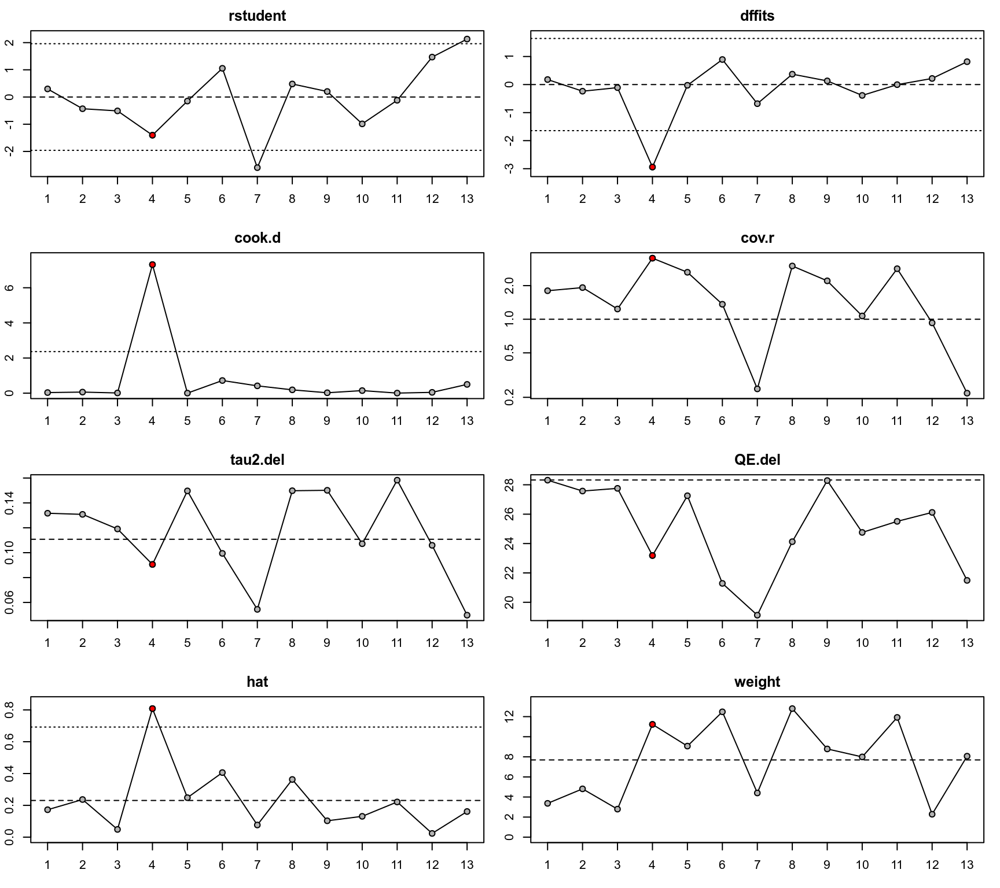

influence.rma.uni.RdThe functions can be used to compute various outlier and influential case diagnostics (some of which indicate the influence of deleting one case at a time on the model fit or the fitted/residual values) for objects of class "rma.uni". For the corresponding documentation for "rma.mv" objects, see influence.rma.mv.
# S3 method for rma.uni
influence(model, digits, progbar=FALSE, ...)
# S3 method for infl.rma.uni
print(x, digits=x$digits, infonly=FALSE, ...)
# S3 method for rma.uni
cooks.distance(model, progbar=FALSE, ...)
# S3 method for rma.uni
dfbetas(model, progbar=FALSE, ...)
# S3 method for rma.uni
hatvalues(model, type="diagonal", ...)an object of class "rma.uni".
an object of class "infl.rma.uni" (for print).
integer to specify the number of decimal places to which the printed results should be rounded. If unspecified, the default is to take the value from the object.
logical to specify whether a progress bar should be shown (the default is FALSE).
logical to specify whether only the influential cases should be printed (the default is FALSE).
character string to specify whether only the diagonal of the hat matrix ("diagonal") or the entire hat matrix ("matrix") should be returned.
other arguments.
The term ‘case’ below refers to a particular row from the dataset used in the model fitting (which is typically synonymous with study).
The influence function calculates the following leave-one-out diagnostics for each case:
externally standardized residual,
DFFITS value,
Cook's distance,
covariance ratio,
the leave-one-out amount of (residual) heterogeneity,
the leave-one-out test statistic of the test for (residual) heterogeneity,
DFBETAS value(s).
The diagonal elements of the hat matrix and the weights (in %) given to the observed effect sizes or outcomes during the model fitting are also provided (except for their scaling, the hat values and weights are the same for models without moderators, but will differ when moderators are included).
For details on externally standardized residuals, see rstudent.rma.uni.
The DFFITS value essentially indicates how many standard deviations the predicted (average) effect or outcome for the \(i\textrm{th}\) case changes after excluding the \(i\textrm{th}\) case from the model fitting.
Cook's distance can be interpreted as the Mahalanobis distance between the entire set of predicted values once with the \(i\textrm{th}\) case included and once with the \(i\textrm{th}\) case excluded from the model fitting.
The covariance ratio is defined as the determinant of the variance-covariance matrix of the parameter estimates based on the dataset with the \(i\textrm{th}\) case removed divided by the determinant of the variance-covariance matrix of the parameter estimates based on the complete dataset. A value below 1 therefore indicates that removal of the \(i\textrm{th}\) case yields more precise estimates of the model coefficients.
The leave-one-out amount of (residual) heterogeneity is the estimated value of \(\tau^2\) based on the dataset with the \(i\textrm{th}\) case removed. This is always equal to 0 for fixed-effects models.
Similarly, the leave-one-out test statistic of the test for (residual) heterogeneity is the value of the test statistic of the test for (residual) heterogeneity calculated based on the dataset with the \(i\textrm{th}\) case removed.
Finally, the DFBETAS value(s) essentially indicate(s) how many standard deviations the estimated coefficient(s) change(s) after excluding the \(i\textrm{th}\) case from the model fitting.
A case may be considered to be ‘influential’ if at least one of the following is true:
The absolute DFFITS value is larger than \(3 \times \sqrt{p/(k-p)}\), where \(p\) is the number of model coefficients and \(k\) the number of cases.
The lower tail area of a chi-square distribution with \(p\) degrees of freedom cut off by the Cook's distance is larger than 50%.
The hat value is larger than \(3 \times (p/k)\).
Any DFBETAS value is larger than \(1\).
Cases which are considered influential with respect to any of these measures are marked with an asterisk. Note that the chosen cut-offs are (somewhat) arbitrary. Substantively informed judgment should always be used when examining the influence of each case on the results.
An object of class "infl.rma.uni", which is a list containing the following components:
an element of class "list.rma" with the externally standardized residuals, DFFITS values, Cook's distances, covariance ratios, leave-one-out \(\tau^2\) estimates, leave-one-out (residual) heterogeneity test statistics, hat values, weights, and an indicator whether a case is influential or not.
an element of class "list.rma" with the the DFBETAS values.
some additional elements/values.
The results are printed with print.infl.rma.uni and plotted with plot.infl.rma.uni.
Right now, leave-one-out diagnostics are calculated by refitting the model \(k\) times. Depending on how large \(k\) is, it may take a few moments to finish the calculations. There are shortcuts for calculating at least some of these values without refitting the model each time, but these are currently not implemented (and may not exist for all of the leave-one-out diagnostics calculated by the function).
It may not be possible to fit the model after deletion of the \(i\textrm{th}\) case from the dataset. This will result in NA values for that case.
Certain relationships between the leave-one-out diagnostics and the (internally or externally) standardized residuals (Belsley, Kuh, & Welsch, 1980; Cook & Weisberg, 1982) no longer hold for the meta-analytic models. Maybe there are other relationships. These remain to be determined.
Belsley, D. A., Kuh, E., & Welsch, R. E. (1980). Regression diagnostics. New York: Wiley.
Cook, R. D., & Weisberg, S. (1982). Residuals and influence in regression. London: Chapman and Hall.
Hedges, L. V., & Olkin, I. (1985). Statistical methods for meta-analysis. San Diego, CA: Academic Press.
Viechtbauer, W. (2010). Conducting meta-analyses in R with the metafor package. Journal of Statistical Software, 36(3), 1--48. https://doi.org/10.18637/jss.v036.i03
Viechtbauer, W., & Cheung, M. W.-L. (2010). Outlier and influence diagnostics for meta-analysis. Research Synthesis Methods, 1(2), 112--125. https://doi.org/10.1002/jrsm.11
### calculate log risk ratios and corresponding sampling variances
dat <- escalc(measure="RR", ai=tpos, bi=tneg, ci=cpos, di=cneg, data=dat.bcg)
### fit mixed-effects model with absolute latitude and publication year as moderators
res <- rma(yi, vi, mods = ~ ablat + year, data=dat)
### compute the diagnostics
inf <- influence(res)
inf
#> $inf
#>
#> rstudent dffits cook.d cov.r tau2.del QE.del hat weight inf
#> 1 0.2978 0.1785 0.0348 1.8003 0.1317 28.3142 0.1725 3.3664
#> 2 -0.4303 -0.2368 0.0620 1.9207 0.1308 27.5744 0.2367 4.8106
#> 3 -0.5100 -0.1094 0.0125 1.2348 0.1191 27.7572 0.0487 2.7920
#> 4 -1.4032 -2.9415 7.3179 3.5225 0.0906 23.1836 0.8082 11.2312 *
#> 5 -0.1490 -0.0263 0.0032 2.6341 0.1497 27.2543 0.2483 9.0681
#> 6 1.0551 0.8926 0.7205 1.3621 0.0994 21.2875 0.4061 12.4817
#> 7 -2.5961 -0.6815 0.4173 0.2379 0.0544 19.1240 0.0766 4.4008
#> 8 0.4793 0.3703 0.1899 2.9984 0.1498 24.1266 0.3627 12.8020
#> 9 0.2027 0.1305 0.0237 2.2071 0.1501 28.2874 0.1030 8.7848
#> 10 -0.9872 -0.3870 0.1470 1.0702 0.1072 24.7567 0.1310 7.9919
#> 11 -0.1197 -0.0030 0.0052 2.8336 0.1583 25.5103 0.2214 11.9238
#> 12 1.4677 0.2171 0.0469 0.9274 0.1059 26.1197 0.0235 2.2836
#> 13 2.1302 0.8150 0.4994 0.2178 0.0498 21.4920 0.1612 8.0630
#>
#> $dfbs
#>
#> intrcpt ablat year
#> 1 0.1492 -0.0622 -0.1491
#> 2 -0.0949 -0.1001 0.0963
#> 3 -0.0280 -0.0403 0.0283
#> 4 2.2248 -2.5380 -2.2161
#> 5 0.0350 0.0063 -0.0354
#> 6 0.5935 -0.0008 -0.5954
#> 7 -0.2659 0.5368 0.2591
#> 8 -0.0394 -0.2110 0.0431
#> 9 0.0728 -0.0865 -0.0718
#> 10 -0.1188 -0.0973 0.1194
#> 11 0.0631 -0.0343 -0.0631
#> 12 -0.0413 0.0465 0.0419
#> 13 -0.8276 0.6269 0.8279
#>
### plot the values
plot(inf)

### compute Cook's distances, DFBETAS values, and hat values
cooks.distance(res)
#> 1 2 3 4 5 6 7 8
#> 0.034763870 0.061956371 0.012503192 7.317914072 0.003236974 0.720524896 0.417263935 0.189852980
#> 9 10 11 12 13
#> 0.023722929 0.146959603 0.005232795 0.046915399 0.499370065
dfbetas(res)
#>
#> intrcpt ablat year
#> 1 0.1492 -0.0622 -0.1491
#> 2 -0.0949 -0.1001 0.0963
#> 3 -0.0280 -0.0403 0.0283
#> 4 2.2248 -2.5380 -2.2161
#> 5 0.0350 0.0063 -0.0354
#> 6 0.5935 -0.0008 -0.5954
#> 7 -0.2659 0.5368 0.2591
#> 8 -0.0394 -0.2110 0.0431
#> 9 0.0728 -0.0865 -0.0718
#> 10 -0.1188 -0.0973 0.1194
#> 11 0.0631 -0.0343 -0.0631
#> 12 -0.0413 0.0465 0.0419
#> 13 -0.8276 0.6269 0.8279
#>
hatvalues(res)
#> 1 2 3 4 5 6 7 8 9
#> 0.17250070 0.23668273 0.04870101 0.80821407 0.24826116 0.40606407 0.07657599 0.36274386 0.10304034
#> 10 11 12 13
#> 0.13102564 0.22140605 0.02353859 0.16124580